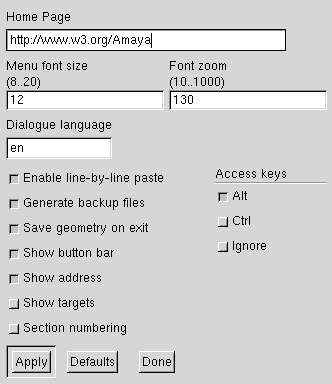
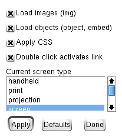
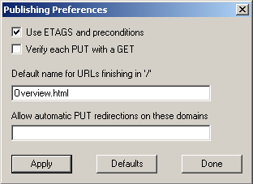
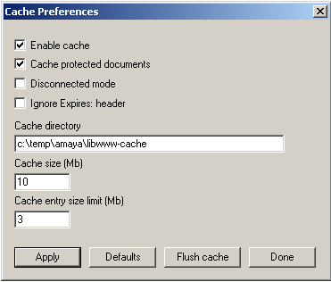
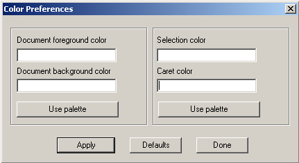
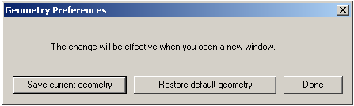
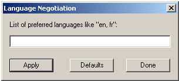
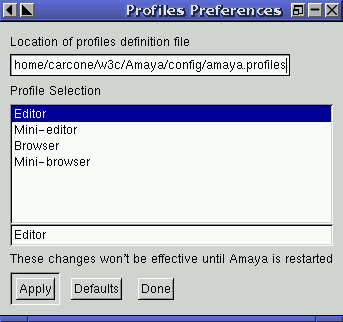
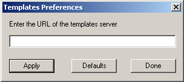

| |
|
These dialogs are found under the Preferences submenu on the Special menu. Nine preferences dialogs are available: general, publishing, cache, proxy, colors, Window geometry, language negotiation, profiles, and templates.
Each of these dialogs contains three action buttons:
Button |
Action |
Apply |
Validates and stores the options shown in the menu. |
Defaults |
Restores, but does not save, the default values. Use the Apply button to validate the options. |
Done |
Dismisses the menu. |
To open the General Preferences dialog, choose General from the Preferences submenu.

The General Preferences dialog displays the user directory, the temporary directory, and the default home page. These options are explained below.
Amaya user directory. Applies to Windows platforms only, not shown in the included figure. Specifies the directory where the user preferences are stored.
Note:
You can't change the location of this directory.
Amaya temporary directory.Windows platforms only, not shown in the
figure. Specifies the directory where Amaya stores its temporary files, for
example, while printing a document. If not specified, the default temporary
directory isc:\temp.
Note:
Changing this directory does not erase the previous one. You must remove the
old directory manually. If the cache was located under the
previous temporary directory, a new cache will be created under the new
directory.
Home Page. Specifies the URI that Amaya will load when launched or
when the user clicks the home page button. An example is http://www.w3.org
Note: A complete URI must be used.
The options below can be toggled on or off by clicking the check box next to an option name. A mark in the box indicates that the option is active.
Enable line-byline paste. This option concerns the
pasting form an external application. When that option is active, Amaya keeps
lines in the source application. If not active, newline
characters are replaced by spaces.
Show background images. Controls whether background images should be shown. This option is only effective when loading a new document.
Show button bar. Controls whether the button bar should be shown in all document main views.
Show address. Controls whether the address should be shown in all document main views.
Show targets. Controls whether link targets should be shown in all document main views.
Section numbering. Controls whether headings are numbered in all document main views.
Access keys. Specifies the key (Alt or
Control) used to implement the document access keys, or specifies that access keys
defined in documents are ignored.
Two options in the General Preferences dialog are only available under the Unix operating system: Menu Font Size and Double-click Delay. These options are explained below.
Menu Font size. Specifies the font size of all the Amaya menus. This option is only taken into account at launch time.
Double-click Delay. This option enables you to control the delay by which two mouse clicks are classed as a double-click. This option is only taken into account at launch time.
This section of the General Preferences dialog lets you choose the font zoom level and define the dialogue language used in Amaya. These options are explained below.
Font Zoom.You can zoom in and out, document window by document window. Each document (text and images) displayed within a zoomed window will be displayed larger or smaller than its real size according to the current zoom. This option enables you to change the default font zoom for all windows. This change affects only font sizes but not image sizes, and is reflected immediately in all open document windows.
Dialogue language. Specifies the language for all of
Amaya's menus and dialogue messages. The default language is American English
(value: en). At the present time, alternate languages are
available: French (fr), German (de), Italian (it),
Spanish (es), Portuguese (pt), Finnish (fi), and Turkish (tr). When launched,
Amaya loads dialogue files according to the current dialogue language: en-,
fr-, de-, it-, es-, pt-, fi- or tr- files. These dialogue files are located
in the Amaya/config directory.
In Thot, a document is specified according to a schema. In Amaya, the
dialogue messages that are displayed when parsing a document or when saving
it under a specific schema are located in the
Amaya/amaya/HTML.code file, where
the code suffix is a language abbreviation (e.g. enorfr). This file has 4 sections:
· extension:Not used by Amaya
· presentation:Not used by Amaya
· export: Identifies the text displayed for each translation schema (Save As command)
· translation: Identifies the text displayed for each element and attribute in the Thot HTML structure.
It is possible to adapt Amaya to new ISO-Latin-1 languages by writing corresponding dialogue files. These dialogue files must be located in the same directory (for example, Amaya/config) and must use the correct ISO 639 code as a prefix (it- for Italian, de- for German, and so on). You must also create the specific HTML.code file.
The Publishing Preferences dialog lets you set ...

The options below can be toggled on or off by clicking the check box next to an option name. A mark in the box indicates that the option is active.
Load images. Controls whether images should be laoded. This option is only effective for new loaded documents.
Double-click activates link. Since the first version of Amaya, users double-click a link to activate it. This enables you to choose whether to edit a link or activate it. You can override this behavior by deactivating this option.
Enable FTP. Enables Amaya to follow FTP URLs. This support is experimental and is not yet fully debugged. For example, for FTP URLs needing user authentication, the authentication information is not always memorized. Also, pressing the Stop button during an FTP download may crash Amaya. Because of these problems, this option was added to Amaya so that other developers may help to debug it faster. By default, this option is turned off.
The Publishing Preferences dialog lets you set preferences for ETAGS and preconditions, whether to verify each PUT command with a GET, set the default name for URLs ending with a slash, and enable PUT redirections on specified domains. These options are explained below.

Use the application/xhtml+xml MIME type for XHTML documents. This option, if enabled, associated the new, official XHTML MIME type to all new XTHML documents that are published on the Web. This option is disabled by default because not all servers can handle this MIME type at the time of this release, Note that this requires also a change in your server configuration, if it's not storing somewhere the metadata associated with each document. This option does not modify the MIME type of existing documents: the MIME type that is received is the same one that will be used when saving the document, except if you do a SaveAs operation, of course.
Use ETAGS and preconditions. HTTP/1.1 introduces new headers that avoid the lost updates problem when publishing. With this option, you can detect conflicts when two users are publishing the same document.
Verify each PUT with a GET. If you don't trust your server, this option tells Amaya to retrieve each document as soon as it has been published and compare it with the copy stored in your workstation. If the documents differ, Amaya will warn you.
Export CR/LF (Windows platforms only). This option, if enabled, precedes each line feed by a carriage return.
Default name for URLs finishing in '/'. An HTTP server usually associates URLs that finish in '/' with a default name, for example, Overview.html. This option enables you to specify the default name that Amaya should use when publishing such a URL. Ask your Webmaster for the default name for your server.
Allow automatic PUT redirections on these domains.
According to the HTTP/1.1 specification, PUT operations should not be
automatically redirected unless it can be confirmed by the user, because this
might change the conditions under which the request was issued. You can avoid
having Amaya prompt with a PUT redirection warning by entering the name of
the server's domain to which you are publishing. You may specify one or more
domains, each separated with a space, e.g., www.w3.org
groucho.marx.edu.
Amaya provides a cache through libwww. The cache is enabled by default and is stored in the AmayaTemp/libwww-cache directory. This menu also provides a Flush Cache button for erasing the cache directory.

Enable cache. Activates or deactivates the cache.
Cache protected documents. By default, documents which are protected by a password are stored in the cache. Use this option to override this behavior.
Disconnected mode. Always retrieves documents from the cache.
Ignore Expires: header. Does not expire cache entries.
Cache directory. Identifies the parent directory for the libwww-cache directory. Changing this directory does not erase the contents of the previous one. You must remove it yourself.
Note:
File protection mechanisms prevent the use of NFS (Network File System)
directories for the cache directory as NFS allows reuse by multiple processes
or users. Use a local directory for the cache.
Cache size. Gives the size, in megabytes, of the cache repository.
Cache entry size limit. Gives the maximum size for a cache entry.
You can use this dialog to specify a proxy and a set of domains where the proxy should or should not be used.

HTTP proxy.Identifies the proxy to be used for HTTP requests. You must specify the full name of the server. If the server is running in a port other than 80, then, like in a URL, you need to add a ":" char to the proxy name, followed by the port number. The table below provides two examples.
|
Proxy domain list. Lists space-separated domains where you want to use your proxy. Use the switch buttons to specify if the proxy should or shouldn't be used with this domain list. For example:
harpo.marx.edu zeppo.marx.edu chico.marx.edu^----------------^----> space separated entries
This dialog lets you select the default foreground and background colors for documents. It enables you to control the colors used by Amaya to display the current selection.

The Unix version also provides entries for changing the menu colors. To change menu colors in Windows, you must use the standard Windows configuration control, found in the Control Panel folder.
All these colors may be selected by name, hex code, or RGB format:
If you enter an invalid color, the default colors are used instead. In Windows, you can also select colors with a color palette.
Note:
Color changes will be effective when you open a new document window or when
you reload a document.
Setting or changing colors for links, visited links, and active links is done through the Amaya.css style sheet.
This dialog enables you to save the current window position and size of the different views of a document (formatted, structure, alternate, links, and Table of Contents) or to restore the default values.

The values that are saved are those belonging to the views of the document where you called this dialog. These changes take affect when you open new document windows.
If a document exists in different languages and your server is configured to do language negotiation, you can use this dialog to enter your language preferences (the first one has the highest priority).

Try browsing this press release, which is available in French, English, and Japanese versions. By changing the language negotiation to the ISO codes for the above languages (fr, en, or ja) you can transparently request any of these versions.
In Amaya, a profile defines the look and feel of the user interface. You can use profiles to hide or display the Amaya buttons and menus. This dialog enables you to choose a profile definition file and select any of the profiles proposed by that file. Amaya proposes two editor profiles (editor and mini-editor) and two browser profiles (browser and mini-browser). Any profile change will be effective on the next launch of Amaya.

A template is a model, or skeleton, of a document that you may use for creating your own documents. This dialog enables you to specify the URL of a template server, which may be either local to your workstation or stored on a server.
You must quit Amaya to validate this option. When you launch Amaya again, the File menu will contain a New > From Template option. Choose this entry to open a new document showing the results of browsing the template URL. This page acts as an index to the templates available in your workstation or on the template server. A sample template server is available at http://cgi.w3.org/cgi-bin/createform.pl. For more information, see the Using Templates with Amaya page.